MeVSono — User guide
How long does one oscillation take? Which frequencies make up a note? Use the two tabs to investigate these questions on the same recording.
Check a 440 Hz note
Choose Mode › Simple and save sinus_440_Hz.wav from this link. Open the saved file in MeVSono. You can also record a tuning fork with the microphone.
- Open the sound. In Period measurement, use the wheel to zoom into a steady passage until you can distinguish about ten cycles.
- Start at a rising zero crossing. Drag to the rising crossing five complete cycles later. The panel should show about 11.36 ms for the whole interval. One cycle takes 11.36 / 5 ≈ 2.27 ms, giving a frequency of 5 / 0.01136 ≈ 440 Hz.
- Switch to Frequency study. Keep the initial extract for the example file. For a tuning fork, use A and B to select about half a second of steady sound. Click the main peak and compare its frequency with your calculation.
In the lab report, record the number of cycles, the total time measured, the frequency you calculated and the frequency of the peak. If the two frequencies differ by a factor close to two, recount the cycles between the cursors.
Open a sound
Choose Open a sound…, press Ctrl + O, or drop a file onto the window. You can use any of these methods to switch sounds during a session.
Supported formats include WAV, MP3, OGG, FLAC and M4A. For MP4, MOV and MKV video, MeVSono uses the default audio track, or the first audio track if none is marked as the default. It reads up to the first 30 minutes. Check the status bar for a partial read.

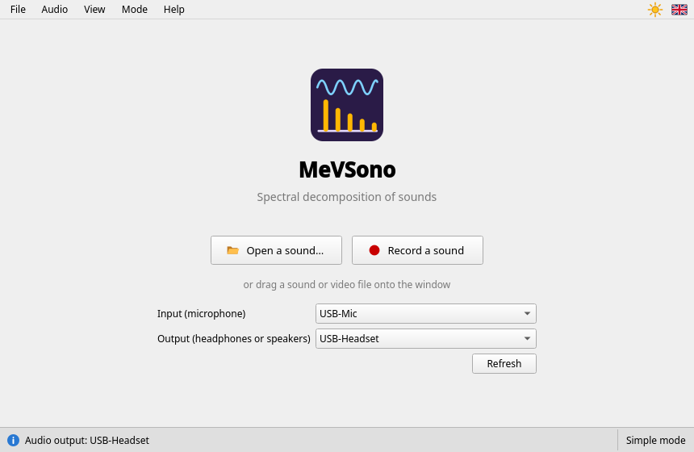
Find your way around the measurement window
After opening a sound, the left panel shows its name, sampling rate, channels and duration. The two tabs sit below the menus. Period measurement shows the signal over time. Frequency study also shows the spectrum of the chosen extract. The status bar reports operations and shows the active mode.
The sun or moon at the top right switches the theme. The flag switches the interface language. F1 opens this guide in that language, including when the computer is offline.
Record a sound and save it
- Connect the microphone or USB headset. On the home screen, choose Input (microphone) and Output (headphones or speakers). If a device is missing, click Refresh. Both lists are also available during a session under Audio › Audio devices…
- Click the red circle labelled Record a sound on the home screen or in the File menu. Recording starts immediately. The dialog shows the microphone, elapsed time and Microphone peak. The level is measured in dBFS relative to digital full scale. Levels near 0 dBFS may clip. Make a short test recording. If the peak repeatedly reaches 0 dBFS, turn down the gain on the microphone or in the system settings and record again.
- Click Stop to open the recording in MeVSono. Cancel discards the recording in progress. A recording can last up to 30 minutes.
- To keep the recording, choose the floppy disk labelled Save recording as WAV… below its name or in File. Choose a folder and filename. The 16-bit PCM WAV file contains the entire recording even if the A–B extract covers only part of it. If you close the window or replace an unsaved recording, MeVSono offers to save it.

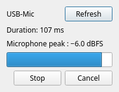

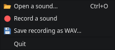
Play the sound or the extract
The playback controls are below the sound’s name. Play ▶ starts playback. Pause ⏸ holds the position of the red playhead on the signal. With Stop ⏹, the next playback starts at the beginning of the chosen portion. Space toggles playback and pause.
In simple mode, Period measurement plays the whole sound. Frequency study plays the A–B extract. In expert mode, the list to the left of ▶ lets you choose either portion in either tab.
Measure a period with t₁ and t₂
- Open Period measurement. Place the pointer over the part of the signal you want to examine and use the mouse wheel until you can distinguish the repeating pattern.
- Hold the left mouse button and drag from one point in the pattern to the corresponding point in a later cycle. The turquoise lines t₁ and t₂ mark the two times. On release, each cursor snaps to a rising zero crossing if one is nearby.
- Read the two times and Δt = t₂ − t₁ in the left panel. To fine-tune a boundary, drag the line or use the keyboard controls.

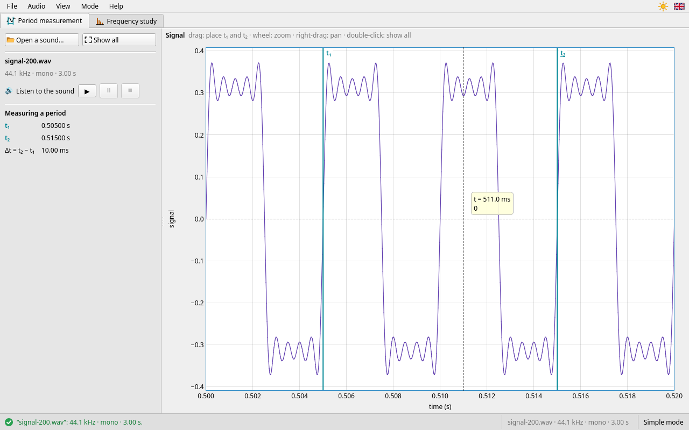
For n complete cycles, T = Δt / n. In the screenshot, one period lasts 5.00 ms, giving a frequency of 1 / 0.00500 s = 200 Hz. A complex waveform can have several rising zero crossings within one cycle. Identify the whole pattern that repeats. The time cursors measure its duration. A and B select the sound used for the spectrum. Each tab keeps its own waveform zoom.
In expert mode, clear Snap t₁ and t₂ to zero crossings to position the cursors freely with the mouse. Once an interval is defined, Analyse this interval sets A and B to t₁ and t₂ and opens the frequency tab.
Choose the A–B extract
In Frequency study, use the upper signal plot to set the extract. Drag with the left mouse button to set A at the start (orange) and B at the end (green). The interval is shaded. To move one boundary, drag its line or click at the desired time to bring the nearest cursor there.
For a sustained note, spread A and B over a steady passage. To study the attack, bring them closer together near the start. The panel gives both times, the duration analysed and the sample count. At 48,000 samples per second, an extract lasting 0.100 s contains 4,800 values per channel. The spectrum below is recalculated after each change. Zoom to the extract enlarges the interval on the signal plot. Show all restores the overview of both the signal and the spectrum.
Read a peak’s frequency and amplitude
On the waveform, a horizontal coordinate is a time. On the spectrum, it is the frequency of a component in hertz. The vertical axis shows digital amplitude, or level in dBFS when that option is enabled in expert mode. The spectrum describes the A–B extract of the channel being analysed.
For a periodic sound, the fundamental frequency is 1 / T. Its harmonics are integer multiples of that frequency. The highest peak can correspond to a harmonic above the first. Peaks at 400, 600 and 800 Hz, for example, are consistent with a 200 Hz fundamental even when there is no visible peak at 200 Hz.
- Hover near a peak. The first values in the tooltip are the pointer coordinates. Under Nearest peak are the values for the detected peak nearest in frequency, marked with a solid dot.
- Click to keep the reading. When the pointer leaves the plot, the panel still shows the frequency and amplitude under Selected peak.
- With the spectrum in focus, use ← and → to move between visible peaks. Esc clears the selection.

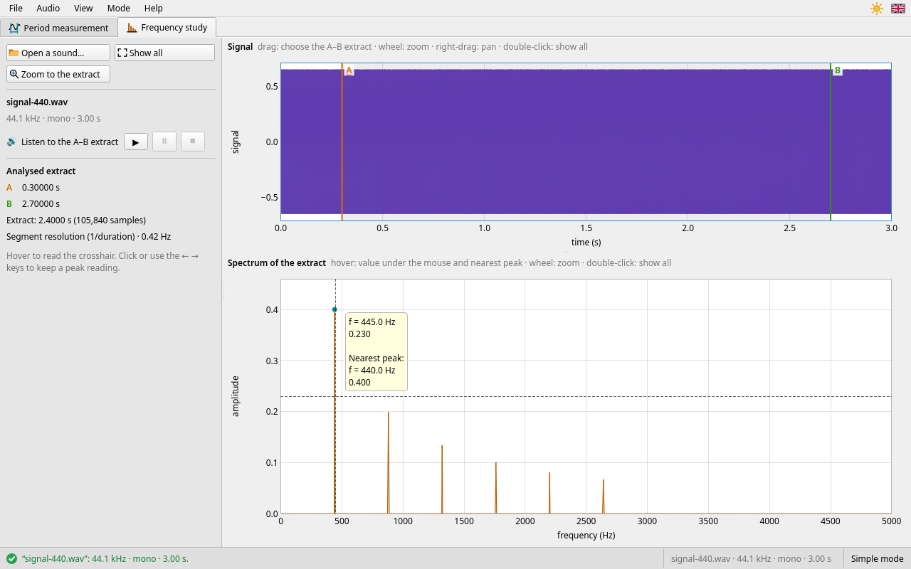
The displayed segment resolution, in hertz, is the reciprocal of the segment duration. A 0.1 s segment gives 10 Hz and a 1 s segment gives 1 Hz. Zoom enlarges the existing curve. To change how well two nearby peaks are resolved, adjust the segment duration and the window function.
Adjust the vertical scale
In simple mode, the vertical axis automatically fits the visible signal or spectrum. Zoom horizontally into a quiet passage to see its variations. The tick labels show the new scale. Read the axis labels before comparing the amplitudes of two sounds. The CSV keeps the original digital amplitudes.
To keep a fixed scale while zooming or panning, choose Mode › Expert, then View › Settings… Under Display, clear Fit the vertical axis to the visible data. Select it again to restore automatic scaling.

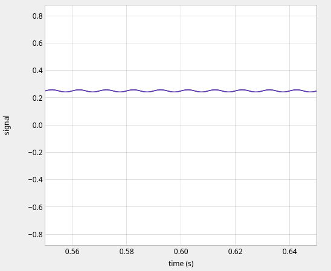

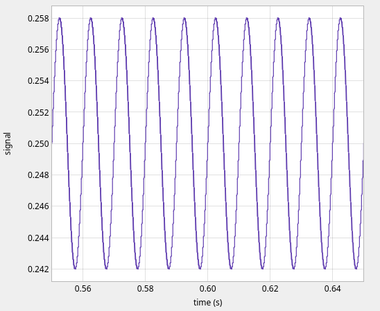
Choose a sound for a lab
Click a filename to save the WAV, then open it in MeVSono. All seven recordings are included with this guide and work offline.
| Files | What to try and what to look for |
|---|---|
sinus_440_Hz.wavdiapason_440_Hz.wav | Measure the sine wave, then the steady part of the tuning fork. Look for a peak near 440 Hz and follow the decay of the tuning fork on the waveform. |
harmoniques_de_220_Hz.wav | Predict the second and third harmonics from the 220 Hz fundamental. Find the peaks near 440 and 660 Hz and check their orders in the expert table. |
clarinette_la.wavpiano_la.wav | Select steady passages of equal duration. Keep the first spectrum, then open the second sound. Identify peaks at similar frequencies and compare their relative heights. |
battements_440_et_444_Hz.wav | Count the envelope maxima over one second. Widen A–B to two seconds and find the two peaks that account for the four beats per second. |
balayage_200_a_2000_Hz.wav | Compare two short extracts of equal duration, one early and one late. The peak shifts upwards in frequency. A long extract includes the frequencies swept through during that interval. |
Compare two spectra
- In Frequency study, choose the first extract. Once its spectrum appears, select View › Keep this spectrum.
- Move A and B or open a second sound. The current spectrum is a solid line and the reference is dashed. The legend in the left panel identifies both sounds and the stored reference interval.
- To compare relative amplitudes, select Match peak amplitudes in View. This multiplies all amplitudes on the reference curve by the same factor. Clear the option to restore the original levels.

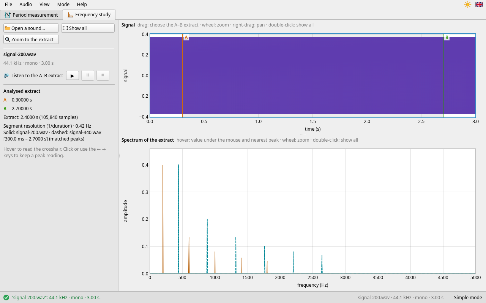
Keeping another spectrum replaces the reference. Remove reference spectrum clears it. If a change of analysis settings hides it, restore the window function and FFT size setting used when you stored it.
Comparing passages and sounds
To compare the timbre of two notes at the same pitch, use the same window and segment duration. Keep a steady passage from the first note, then choose a steady passage from the second. To study a single note as it develops, keep the attack and move A–B along the sustained sound. Peak positions are in hertz. Their heights also depend on the recording gain.
Two pure tones of equal amplitude at 440 and 444 Hz produce beats at 4 Hz. Keep the spectrum of a short extract, then move A and B at least two seconds apart using automatic FFT size. The two peaks are now distinct. The combined waveform repeats every 250 ms. Its frequency of 4 Hz is below the 20 Hz search limit, so Expert mode reports No stable fundamental detected.
Choose a mode
Use Mode › Simple for measuring periods and reading peaks with a class. Choose Expert to check students’ measurements against an automatic estimate or export the values to a spreadsheet. The check mark and the text at the bottom right identify the active mode. Both modes support recording, playback, saving a recording as WAV and comparing spectra.

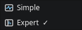
| When opening a sound | Simple (default) | Expert |
|---|---|---|
| Initial extract | The middle 80% of the sound. | The strongest 0.5 s on the selected channel, or the whole sound if it is shorter. |
| Analysis | Hann window, automatic FFT size, linear amplitudes and frequencies. The initial view extends to 5 kHz or half the sampling rate, whichever is lower. | Adjustable settings, channel selection, period and fundamental estimates, harmonics table and CSV exports. |
Changing mode keeps the current sound and the existing A–B boundaries. Expert settings are restored when you return to that mode.
Fundamental and harmonics
Autocorrelation compares the A–B extract with a time-shifted copy. When several cycles line up again at the same delay, that delay gives an estimate of the period. Compare it with the manual measurement Δt / n. For a long extract, MeVSono estimates the delay on an active block of 65,536 samples, then checks repetition at several points in A–B. Both tabs report the period of the same extract. The initial 5 kHz display limit sets how much of the spectrum is visible. If the extract has no clear period, you can still use the cursors to measure a time interval.
In Frequency study, small circles mark detected peaks. MeVSono looks for a fundamental f₁ consistent with the peak frequencies and the repeating signal. Each peak is assigned to a single harmonic. With peaks at 200 and 500 Hz, the waveform can repeat every 10 ms. The fundamental is then 100 Hz and the table shows peaks at harmonics 2 and 5, with a dash in the first row. When the estimate is inconclusive, the panel reads No stable fundamental detected.

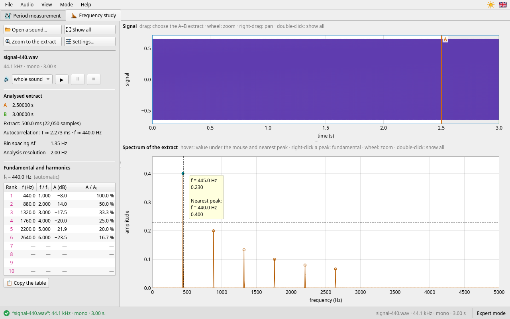
- To set f₁ manually, right-click near a peak and choose Use the … peak as the fundamental. Automatic detection restores the automatic estimate.
- The table gives the harmonic rank, measured frequency, ratio f / f₁, amplitude level and percentage of the first harmonic’s amplitude. A dash indicates an unavailable value. In particular, relative amplitude requires a detected first harmonic.
- Show the n × f₁ marks places dotted lines at the expected harmonic frequencies. Copy the table copies the rows and columns for pasting into a spreadsheet or document.
Adjust analysis and display settings
In expert mode, open View › Settings… or the Settings… button in the left panel. Changes take effect immediately. Default values restores the analysis and display defaults. Close returns to the measurement window.

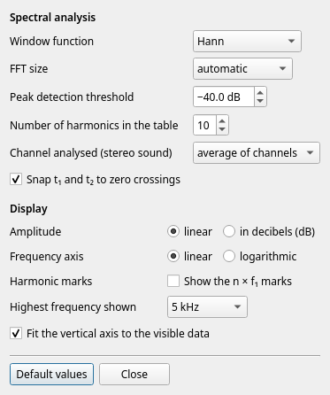

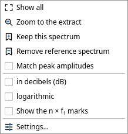
Window function
If the ends of a segment do not line up, energy from a single tone spreads into neighbouring frequency bins. A window multiplies the samples by a known set of weights before the transform. The choice affects peak width and the side lobes that can hide a weak tone near a strong one.
| Window | Effect on the spectrum |
|---|---|
| Hann | Initial setting. A balance between peak width and side-lobe attenuation. |
| Rectangular | Uniform weighting. Narrow main lobe with higher side lobes. |
| Hamming | Lower side lobes near the peak, with slower decay farther away. |
| Blackman, Blackman-Harris | Lower side lobes at the cost of a wider main lobe. |
| Flat top | Wider peak. Its height changes little as the frequency moves between FFT bins. |
FFT size and segment resolution
With automatic size, the fast Fourier transform (FFT) processes the extract in a single segment up to 262,144 samples and pads it with zeros to a power of two. For a longer extract, or when a fixed FFT size is shorter than the extract, segments overlap by at least half and their powers are averaged. Fixed sizes range from 1,024 to 262,144 points.
Bin spacing Δf equals fs / N, where fs is the sampling rate and N is the FFT size. Analysis resolution is the reciprocal of one segment’s duration. Adding zeros produces more closely spaced bins. Resolving two components depends on the duration of the sampled data, the window and their amplitudes. The Δf tooltip gives the FFT size and, when averaging is used, the number of segments.
Example at 48 kHz. With 4,800 sound samples and an 8,192-point FFT, the segment lasts 0.100 s. Its reciprocal duration is 10 Hz, while the bin spacing is 48,000 / 8,192 ≈ 5.86 Hz. Choosing 16,384 points for the same extract gives a bin every 2.93 Hz. Move A and B farther apart to observe more cycles of the sound.
Detection, channel and axes
- Peak detection threshold controls which peaks are detected. At −40 dB the threshold is 1% of the maximum peak amplitude. Number of harmonics in the table sets the number of rows, from 1 to 40 (default 10).
- Channel analysed selects the average of the channels, left or right for a stereo sound. The signal plot, spectrum and signal extract CSV use that channel.
- Amplitude offers a linear scale or dBFS. A digital amplitude of 1 is 0 dBFS and 0.5 is approximately −6 dBFS. Measuring sound pressure in pascals would also require a calibrated microphone and recording chain.
- The Frequency axis can be linear or logarithmic. Highest frequency shown sets the upper limit of the overview, up to fs / 2. Vertical scaling controls the tick marks on the signal plot and the spectrum.
Export measurements as CSV
In expert mode, File offers two CSV exports. Wait for the calculation to finish before exporting the current extract’s spectrum.
| Command | File contents |
|---|---|
| Export the spectrum (CSV)… | spectrum.csv has one row per FFT bin from 0 to fs / 2, even when the plot is zoomed in. The columns are f (Hz), A and A (dB). The file contains FFT bins for the current sound. The interpolated frequency shown under “Selected peak” can lie between two rows in the CSV. |
| Export the signal extract (CSV)… | extract.csv contains samples of the selected channel between A and B. The columns are t (s), measured from the start of the sound, and signal. |
Choose a folder and filename. MeVSono adds .csv to a name without an extension and asks before replacing a file. The progress dialog lets you cancel the export.
The interface language determines the format. English uses commas between columns and a decimal point. French uses semicolons between columns and a decimal comma. If the spreadsheet puts a whole row into a single cell, select the corresponding column delimiter when importing the file. For a playable audio file, use Save recording as WAV…
Mouse and keyboard
Focus the waveform to move a time cursor, or the spectrum to step through peaks. The zoom keys act on the plot that has focus.
| Action | Gesture or shortcut |
|---|---|
| Open a file | Ctrl + O or drop a file onto the window. |
| Switch tabs | Ctrl + Tab, or Ctrl + Page Down / Page Up. |
| Focus a plot with the keyboard | Press Tab until the plot border is highlighted. |
| Place or move boundaries | Drag on the signal to set the pair. Drag a line or click near its new position to move one boundary. |
| Fine-tune a cursor | On the signal, press 1 or 2 to select the cursor, then ← or → to move one sample. Holding Shift moves by 1% of the visible interval, with a minimum of one sample. |
| Zoom a plot | Scroll the wheel around the pointer. On the keyboard, + or − zooms around the active cursor or the selected peak. |
| Pan or reset a plot | Right-drag or Shift + wheel to pan. Double-click or press Home to reset that plot. Show all resets both plots. |
| Keep a peak reading | Click the spectrum or use ← / →. Esc clears the selection. |
| Play or pause | Space. |
| Change interface size | Ctrl + + or Ctrl + −. Ctrl + 0 restores normal size, including after using a projector. |
| Open this guide | F1 or Help › User guide… |
Troubleshooting
- The automatic period differs from my measurement.
- Select about five complete cycles between t₁ and t₂ and divide Δt by the number of cycles. In expert mode, use Analyse this interval to compare both methods on the same steady part of the recording.
- The average channel of a stereo recording looks almost silent.
- In expert mode, inspect the left and right channels in turn. If their oscillations are in opposite phase, their average can be small even when each contains a clear signal.
- A newly connected USB headset does not appear.
- Click Refresh on the home screen or under Audio › Audio devices… Select both the microphone input and the headset output. If a list remains empty, check that the operating system recognises the device and allows microphone access.
- “Record a sound” is greyed out, or recording stopped unexpectedly.
- Recording requires an available input. If the microphone is disconnected while recording, MeVSono opens the audio received so far when it contains samples. You can save that part as WAV before reconnecting the microphone.
- The microphone meter stays low or shows “Full scale”.
- Check the selected input and the microphone gain. For repeated full-scale peaks, reduce the gain or move the microphone farther away. During analysis, “Full-scale plateaus” indicates flat peaks consistent with clipping in the extract.
- Playback is silent or stops when the headset is unplugged.
- Select an available output, check its volume and restart playback. In the frequency tab, also check the A–B boundaries of the extract you are listening to.
- A file is rejected or only part of it opens.
- Check that it has an audio track. Files in an unrecognised format can be converted to WAV. The status bar reports an unreadable end, invalid values replaced by zero or the 30-minute reading limit.
- The waveform looks like a solid band, or the spectrum says “Extract too short”.
- Use the wheel on the signal to see its oscillations. To obtain a spectrum, move A and B farther apart on the signal. At least eight samples are needed.
- Two peaks merge, or the reference disappears.
- For nearby peaks, use a longer analysis segment. If a fixed FFT size limits the segment length, increase that size too. For a hidden reference, restore the FFT and window settings used for the comparison.
Install and configure a workstation
MeVSono distributions are available on the MeVSuite releases page. Once installed, the program opens files, makes measurements and displays this guide offline.
- Portable Windows version. Extract
MeVSono-version-windows-x64.zipand keep its folder together. Runmevsono.exe. To start with an audio file, choose “Open with…” in File Explorer. - Windows installer.
MeVSono-version-windows-x64-setup.exeinstalls the program inProgram Files\MeVSuite\MeVSonoand adds a Start menu shortcut. Uninstall it from Windows Settings. For unattended deployment, the installer and uninstaller accept the options below. - Linux. Install the
.debor.rpmpackage for your system, or mark the.AppImagefile executable and run it. FFmpeg provides decoding for additional sound and video formats.
MeVSono-version-windows-x64-setup.exe /VERYSILENT /SUPPRESSMSGBOXES /NORESTART
"C:\Program Files\MeVSuite\MeVSono\unins000.exe" /VERYSILENT /SUPPRESSMSGBOXES /NORESTARTPersonal and shared settings
On first launch, MeVSono uses the system theme and the system language if it is French or English (otherwise English). The personal mevsono.ini file stores the mode, language, theme, expert settings, interface size, last folder and window geometry. Audio devices are selected for the session.
| System | Personal file | Shared settings |
|---|---|---|
| Windows | %APPDATA%\MeVSuite\mevsono.ini | mevsono.ini beside mevsono.exe. |
| Linux | ~/.config/MeVSuite/mevsono.ini, or the directory set by XDG_CONFIG_HOME followed by /MeVSuite/mevsono.ini. | /etc/MeVSuite/mevsono.ini takes priority, then the file beside the executable. |
At startup, a valid shared setting takes precedence over the corresponding personal choice. This lets you set the mode for a class while leaving each user free to choose a language. Changes made during a session are written to the personal file. The following shared settings start every workstation in simple mode with an English interface and a light theme.
mode = simple
language = en
theme = lightUse language = auto and theme = auto to follow the system. Help › About MeVSono… shows the settings paths. The pages, screenshots and seven lab recordings are available in the notice folder in the user’s MeVSono cache. Use the browser’s print command to print a page.
Support, version and licence
After an unexpected shutdown, the error message gives the path to mevsono.log. The log, next to mevsono.ini, holds the most recent error. When reporting a measurement problem, describe the recording, A–B interval, channel, mode and what appeared on screen. Include the operating system and the version shown under Help › About MeVSono… Attach the log if available.
MeVSono is free software by Rémi MEVAERE, distributed under the MIT licence. About MeVSono… lists the components, including Qt, Qt Multimedia and FFmpeg. About Qt… gives Qt’s licensing terms. On Windows, licences for the bundled libraries are in the licences folder beside the program.
Contact the author at suite@sciences-physiques.net.